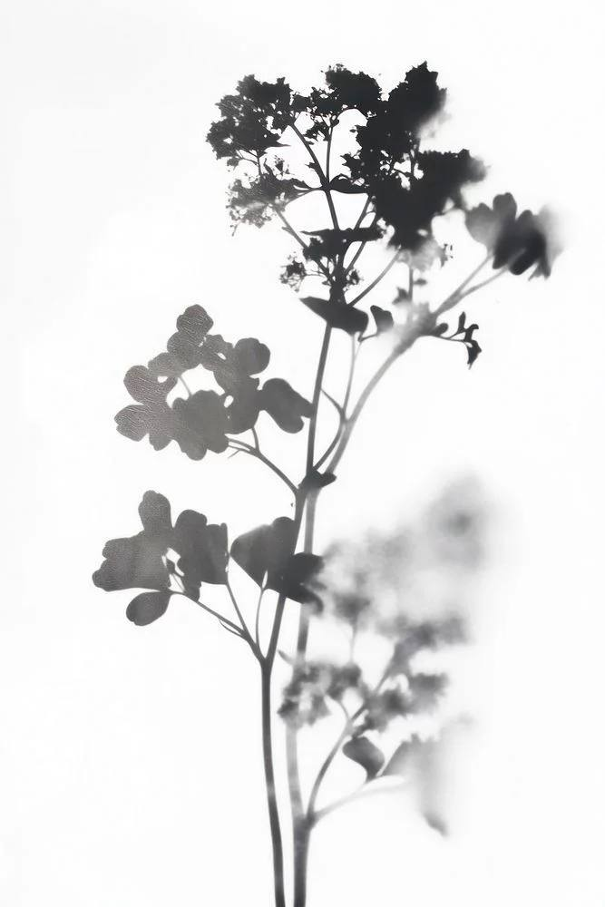

· 2026 ·
Серія знімків про місце, де час плине інакше — візуальна подорож у моє дитинство, у село під назвою Озірщина, що розкинулось між трьома озерами. Спроба зупинити дорогу мені мить, яка непомітно відходить разом із часом, спосіб поділитися частинкою моєї душі разом з вами.
Пресреліз
Віртуальна фотовиставка «Між трьома озерами»:
Київська фотохудожниця та мисткиня Діана Шльонська, родом із Бородянки, презентує свій новий фото-проєкт — «Між трьома озерами».
Ця експозиція — це візуальна оповідь про невеличке село Озірщина, що знаходиться в Бучанському районі поруч із селищем Бородянка.
Ви зможете переглянути фотознімки місцевих краєвидів, кадри з сільського побуту людей та життя тварин, виконані в поетичній манері, притаманній авторці.
Ми з великою радістю запрошуємо вас зануритися в подорож до місця, де спогади оживають у кожному кадрі.